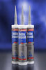
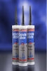
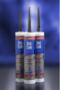
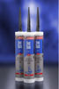

Специальная Морская серия (MSR)
Специальная Морская Серия (MSR) - это производство продуктов, специально разработанных для применения в морском деле. Специальная Морская Серия (MSR) состоит из следующих продуктов:- Слоистый компаунд MSR Bedding Compound.
- Строительный клей MSR Construction Adhesive.
- Палубный заполнитель MSR Deck Caulk.
-
Быстросохнущий клей MSR Fast Tack.

Simson MSR BC Слоистый КомпаундSimson MSR Bedding Compound
Слоистый компаунд MSR Bedding Compound производства компании Simson – это однокомпонентный, эластичный, быстро отвердевающий клей / герметик на основе МS-полимера.
ВИДЫ ИСПОЛЬЗОВАНИЯ:
Используется, как слоистый компаунд между палубами из стали, алюминия, сложного полиэфира и / или деревянными палубами и тиковым набором. Также пригоден для соединения / герметизации при креплении водонепроницаемого фанерного настила к настилу из стали, алюминия, сложного полиэфира или к деревянным настилам.
ОСОБЕННОСТИ:
- Не содержит ни растворителей, ни изоцианатов.
- Сохраняет эластичность в диапазоне температур от - 40°C до + 100°С.
- Температура использования в диапазоне от +5°С до +35°С.
- Нейтральный, без запаха, быстро отвердевающий.
- Совместим с большинством промышленных лакокрасочных систем, как на основе алкидных полимеров, так и на основе дисперсионных материалов.
- Очень хорошая устойчивость к ультрафиолетовому излучению и очень хорошие свойства сопротивляемости старению. Долговременная устойчивость к пресной и морской воде.
- Слоистый компаунд MSR Bedding Compound производства компании Simson обладает свойствами ослабления звука и уменьшения вибрации.

Simson MSR CA Конструкционный клейSimson MSR Construction Adhesive
Симсон МСР Конструкционный клей (Simson MSR Construction Adhesive) это однокомпонентный, постоянно эластичный, быстро вулканизирующийся конструкционный клей, основанный на модифицированном силиловом полимере (SMP). Клей специально разработан для приклеивания элементов конструкций в яхтостроении и судостроении.
ИСПОЛЬЗОВАНИЕ:
Приклеивание и уплотнение судовых конструкций в случаях, когда предъявляются высокие требования к прочности и эластичности конструкций и т.п. Приклеивание привальных брусов. Приклеивание и уплотнение палубных элементов. Приклеивание палубных крышек лючков. Приклеивание листовых конструкционных элементов. Приклеивание и уплотнение соединений палубы и корпуса. Приклеивание палубных люков и иллюминаторов. В качестве палубного клея, когда требуется большая прочность соединения (рекомендуется использовать версию клея с медленной вулканизацией).
ОСОБЫЕ СВОЙСТВА:
- Не содержит растворителей и изоцианатов.
- Имеет очень хорошую стойкость к ультрафиолетовым лучам и длительную стойкость к пресной и соленой воде.
- Имеет хорошую адгезию к большинству материалов без грунтования.
- Сохраняет постоянную эластичность в диапазоне температур от -40°С до +100°С.
- Нейтральная вулканизация, не выделяет запахов и быстро вулканизируется.
- Подходит для окрашивания большинством видов промышленных красок и лаков, как на основе алкидных смол, так и дисперсионных (в связи с широким спектром типов промышленных красок, рекомендуется провести тестирование на совместимость).
- Окрашивание можно производить сразу после вулканизации поверхностного слоя (мокрое по мокрому), это не влияет на скорость вулканизации.
- Вулканизировавшийся материал можно шкурить и шлифовать.
Как правило, Симсон МСР Палубный клей хорошо схватывается без применения грунтовки с очищенными от пыли, масла и смазок, сухими материалами как алюминий, окрашенный порошковыми красками металл, полиэстер, крашеное и лакированное дерево.
Не схватывается с необработанными полиэтиленом, полипропиленом и тефлоном.
В случаях, когда предполагается эксплуатация с высокими механическими или термическими нагрузками, особенно при контакте с водой, или при особых требованиях к прочности соединения, необходимо предварительно грунтовать поверхности с помощью Симсон Праймера М (Simson Primer M). Симсон Праймер М (Simson Primer M) еще называется грунт-очиститель, поскольку очищает поверхность от масла и грунтует ее одновременно.
Рекомендуется использовать Симсон Праймер П (Simson Primer P) для подготовки струганных поверхностей необработанного дерева. Для более полной информации ознакомьтесь с характеристиками на Симсон Праймер М (Simson Primer M) и Симсон Праймер П (Simson Primer P).

Simson MSR DC Палубный Заполнитель
Simson MSR Deck Caulk
Палубный заполнитель MSR Deck Caulk производства компании BOSTIK – это однокомпонентный, сохраняющий постоянную эластичность, быстро отвердевающий герметик на основе МS-полимера.
ВИДЫ ИСПОЛЬЗОВАНИЯ:
Водонепроницаемая герметизация стыков тиковых палуб.
ОСОБЕННОСТИ:
- Не содержит ни растворителей, ни изоцианатов.
- Сохраняет эластичность в диапазоне температур от - 40°C до + 100°С.
- Температура использования в диапазоне от +5°С до +35°С.
- Нейтральный, без запаха, быстро отвердевающий.
- Совместим с большинством промышленных лакокрасочных систем, как на основе алкидных полимеров, так и на основе дисперсионных материалов.
- Очень хорошая устойчивость к ультрафиолетовому излучению и очень хорошие свойства сопротивляемости старению. Долговременная устойчивость к пресной и морской воде.
- Может быть отшлифован после отвердения.

Simson MSR FT БыстросохнущийSimson MSR Fast Tack
Simson МСR Fast Task – это эластичное однокомпонентное быстро застывающее клеящее вещество, основанное на Силил-Измененном Полимере (SMP), быстро связывающее сразу после нанесения, крайне устойчивое к ультрафиолетовому облучению, с высокой сопротивляемостью пресной и морской воде.
ОБЛАСТЬ ПРИМЕНЕНИЯ:
- Непосредственное склеивание перегородок и окон (стекло, полиакрил (PMMA), поликарбонат (PC)) в морских условиях
- Склеивание испытывающих давление граней
- Склеивание палубных люков и иллюминаторов
- Связывание шкотов
- Связывание палубных стыков
- Связывание палубы и корпуса
СВОЙСТВА:
Высокая крепость (внутренняя связанность). Снимает потребность в дополнительных соединениях
Не содержит растворителей и изоцианатов
Очень высокая устойчивость к ультрафиолету и износу от времени.
В целом хорошее скрепление на различных поверхностях без использования грунта, например, на стекле с керамическим покрытием, полиакриле и поликарбонате
Постоянная эластичность в диапазоне температур от –40 до +100°С
Бесцветный, не имеет запаха и быстро застывает
Сочетается с большинством промышленных красок и лаков, как на алкидной смоле, так и дисперсионными (из-за большого количества различных типов лаков и красок с различными свойствами рекомендуется предварительно протестировать их совместимость)
Окрашивается сразу после образования корки, это не влияет на скорость застывания
Simson Праймер П
Simson PRIMER P
Грунтовка PRIMER P производства компании BOSTIK – это водянистая, жидкая грунтовка для улучшения адгезии нескольких продуктов Simson на пористых поверхностях. Обращайтесь к листу технической информации.
ВИДЫ ИСПОЛЬЗОВАНИЯ:
- Предварительная обработка минеральных поверхностей, таких как кирпичная кладка, бетон, лёгкий бетон.
- Предварительная обработка деревянных поверхностей, таких как стыки палуб корабля из тикового дерева.
Simson Очиститель Е
Simson CLEANER E
Моющий раствор CLEANER E производства компании SIMSON - это подготавливающий агент, идеально подходящий для очистки иобезжиривания поверхностей, которые затем крепятся или герметизируются при помощи продуктов серии MSR компании Simson.
ВИДЫ ИСПОЛЬЗОВАНИЯ:
- Очистка и обезжиривание металлов, таких как сталь; сталь, оцинкованная горячим способом, алюминий, цинк и металла с порошкообразным покрытием.
- Очистка и обезжиривание стыков палуб из тикового дерева перед нанесением грунтовки.
- Удаление не затвердевшего герметика и клея, изготовленного на основе МС-полимера, силиконов, полисульфида и полиуретана с поверхностей и инструментов.
- Очистка и обезжиривание стеклянных поверхностей.
Simson Праймер М
Simson PRIMER M
Грунтовка PRIMER M производства компании SIMSON - это "промывка", для улучшения прилипания отдельных особых продуктов компании SIMSON, созданных на основе МС-полимера и силиконов к внутренним поверхностям.
ВИДЫ ИСПОЛЬЗОВАНИЯ:
- Предварительная обработка ровных алюминиевых, стальных, медных и латунных поверхностей.
- Предварительная обработка металлов с порошкообразным покрытием.
- Предварительная обработка анодированного алюминия.
- Предварительная обработка лакированных металлов.
- Предварительная обработка сложного полиэфира.
Быстро высыхает, приблизительно, через 30 минут.
Легко использовать в качестве "промывки".
Эффективен в использовании.